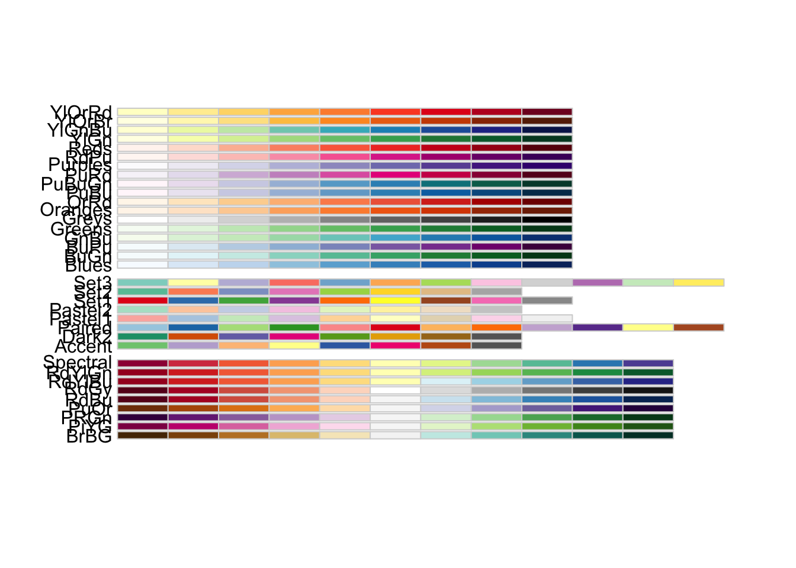

library(tidyverse)
library(RColorBrewer)
counties <- read_csv("https://raw.githubusercontent.com/sds-192-intro-fall22/sds-192-public-website-quarto/a8b64e3070ca2543b904d4d92780b09e6062ced6/website/data/nbi_counties.csv")
route_prefixes <- read_csv("https://raw.githubusercontent.com/sds-192-intro-fall22/sds-192-public-website-quarto/a8b64e3070ca2543b904d4d92780b09e6062ced6/website/data/nbi_route_pre.csv")
maintenance <- read_csv("https://raw.githubusercontent.com/sds-192-intro-fall22/sds-192-public-website-quarto/a8b64e3070ca2543b904d4d92780b09e6062ced6/website/data/nbi_maintenance.csv")
kinds <- read_csv("https://raw.githubusercontent.com/sds-192-intro-fall22/sds-192-public-website-quarto/a8b64e3070ca2543b904d4d92780b09e6062ced6/website/data/nbi_kind.csv")
nbi_ma <- read.delim("https://www.fhwa.dot.gov/bridge/nbi/2022/delimited/MA22.txt", sep = ",") %>%
left_join(counties) %>%
left_join(route_prefixes) %>%
left_join(maintenance) %>%
left_join(kinds) %>%
filter(SERVICE_ON_042A == 1) %>%
select(STRUCTURE_NUMBER_008, COUNTY_CODE_003_L, ROUTE_PREFIX_005B_L, MAINTENANCE_021_L, YEAR_BUILT_027, ADT_029, STRUCTURE_KIND_043A_L, STRUCTURAL_EVAL_067, BRIDGE_IMP_COST_094) %>%
mutate(STRUCTURE_KIND_043A_L =
case_when(
STRUCTURE_KIND_043A_L == "Concrete continuous" ~ "Concrete",
STRUCTURE_KIND_043A_L == "Steel continuous" ~ "Steel",
STRUCTURE_KIND_043A_L == "Prestressed concrete continuous" ~ "Prestressed concrete",
TRUE ~ STRUCTURE_KIND_043A_L)) %>%
mutate(BRIDGE_IMP_COST_094 = BRIDGE_IMP_COST_094 * 1000)
nbi_hampshire <- nbi_ma %>% filter(COUNTY_CODE_003_L == "Hampshire")Lab 2: Visualization Aesthetics
Introduction
Designing effective data visualizations involves reviewing available data and then determining how best to map variables in the data onto a variety of visual cues. When we refer to visual cues, we are referring to those visual components of the plot that help us discern differences across data points. For instance, a plot might use different shapes or colors to represent different categories of data. A plot might also place points at different positions or bars at different heights to represent different numeric values. This week we will practice mapping variables in a dataset onto different plot aesthetics in order to tell different stories with the data. We will only be creating one type of plot today - a scatterplot. However, we are going to show how we can use different visual cues to plot a number of different variables onto a scatterplot.
Learning Goals
- Read the
ggplotcheatsheets - Map variables onto plot aeshetics
- Adjust the attributes of a plot
- Adjust the scales of aeshetics on plots
- Deal with overplotting
- Facet plots into small multiples
Review of Key Terms
- Aesthetics
-
Visual cues that we map variables in a dataset onto
- Cartesian grid
-
A 2-dimensional grid with an intersecting x and y axis
- Sequential color
-
A uni-directional ordering of shades
- Qualitative color
-
A discrete set of colors
- Divergent color
-
A diverging ordering of color shades
- Overplotting
-
Instances when visual representations of individual data points overlap on a plot making aspects of the plot illegible
National Bridge Inventory Dataset
Every year the U.S. Federal Highway Administration publishes a dataset listing every federally-regulated bridge and tunnel in the U.S., along with its location, design features, operational conditions, and inspection ratings. The data is used to review the safety of these transportation infrastructures for the traveling public. As you can imagine, for politicians promising to the improve the state of transportation infrastructure, this dataset is integral to determining where to allocate improvement funds:
Today, we are going to look at a subset of 2022 NBI data for Massachusetts and for Hampshire County, MA, and we are going to focus solely on highway bridges (excluding pedestrian and railroad bridges). We’re going to look at what kinds of variables might contribute to poor bridge conditions, where there are poor bridge conditions, and which entities are responsible for maintaining them. The data documentation for this dataset is quite thick, so I will provide you with a data dictionary for today.
| VARIABLE NAME | DESCRIPTION |
|---|---|
| STRUCTURE_NUMBER_008 | Unique ID for the bridge |
| COUNTY_CODE_003_L | Name of the county where the bridge is located |
| ROUTE_PREFIX_005B_L | Route signing prefix for the inventory route |
| MAINTENANCE_021_L | The actual name(s) of the agency(s) responsible for the maintenance of the structure |
| YEAR_BUILT_027 | The year of construction of the structure |
| ADT_029 | The average daily traffic volume for the inventory route based on most recent available data |
| STRUCTURE_KIND_043A_L | The kind of material and/or design of the structure |
| STRUCTURAL_EVAL_067 | A rating of the structural evaluation of the bridge based on inspections of its main structures, substructures, and/or its load ratings |
| BRIDGE_IMP_COST_094 | Estimated costs for bridge improvements |
Setting Up Your Environment
Install the RColorBrewer package by entering the following into your
RConsole:install.packages("RColorBrewer")Run the code below to the import the bridge inventory for Massachusetts and for Hampshire County into
R. Call me or one of the data assistants over if you get an error.
Visualization Aesthetics
The visual cues that we select to display on a plot largely depend on the kind of data that we have available. Last week we discussed the differences between categorical variables and numeric variables. Certain types of visual cues are more suited for representing categorical variables, while other types of visual cues are more suited for representing numeric variables. For instance, we wouldn’t use different shapes to represent different numeric values because there is no obvious ordering to a group of shapes (e.g. a triangle isn’t necessarily larger or greater than a circle; they’re just different). Because of this, shapes are much more appropriate for representing nominal categorical variables. Size is a much more effective visual cue for numeric variables because size can increase as the values in the data increase.
| Cue | Effective for what kinds of variables? | Example where applied? |
|---|---|---|
| Shape | Categorical | Points on scatterplots |
| Size | Numeric | Points on scatterplots |
| Area | Numeric | Bars in bar plots |
| Color | Categorical (Qualitative palette) Numeric (Sequential/Divergent) |
Points on scatterplots; Bars in bar plots; Lines in a line plot |
| Position | Categorical; Numeric | Points on scatterplots |
| Angle | Numeric | Slices in pie chart |
You’ll remember from lecture that we map variables onto these visual cues via the aesthetic function (aes()) in ggplot().
Tip
You may wish to reference this ggplot cheatsheet when completing this lab. Note how this cheatsheet is organized. There are headings for things like:
- Basics
- Geom functions
- Scales
- Coordinate systems
The first tip to find what you’re looking for is to consider what heading the graphic element will likely fall under. Also note that, for many functions on this cheatsheet:
- an image is provided for how the plot will transform,
- the function and its arguments are referenced in bold, and
- a text description of what will happen when you apply the function is provided
Finally note that most of these functions listed on this cheatsheet are appended to the ggplot() object with a + sign.
Position
Since today we will be working with scatterplots, let’s start by talking about position. When we refer to position, we refer to the location of a point on a Cartesian plane (i.e. its position on an x-axis and its position on a y-axis). We can create scatterplots by mapping a variable in our dataset onto the x-axis and another variable onto the y-axis (aes(x = VARIABLE_NAME, y = VARIABLE_NAME)). Let’s take a look at what happens when we map the year a bridge was built onto the x aesthetic and the bridge’s structural evaluation onto the y aesthetic for all Hampshire County Massachusetts highway bridges.
nbi_hampshire %>%
ggplot(aes(x = YEAR_BUILT_027,
y = STRUCTURAL_EVAL_067)) +
geom_point() +
labs(title = "Highway Bridge Conditions, Hampshire County, MA, 2022",
x = "Year Built",
y = "Structural Evaluation") +
theme_minimal()Each point on the plot corresponds to one observation (row) in the dataset. Since each row in this dataset is one Hampshire County, MA highway bridge, each point on this plot also represents one Hampshire County, MA highway bridge. The position of the point indicates to us the year that bridge was built and its structural evaluation. Zooming out to look at all of this data we can see that newer bridges tend to have higher structural evaluations.
Overplotting
You’ll notice that parts of this plot can be challenging to read because some points overlap each other making it hard to distinguish one from the next. This is an example of overplotting, and there are a number of strategies we can take to addressing it. Most of these strategies involve revising attributes of the points on the plot (e.g. the size, transparency, and position of the points).
Note that attributes are different than aesthetics. Recall that when we assign aesthetics in a plot, we are adjusting the visual cues on a plot according to the values in a variable. The visual cues will be different based on the values in that variable (e.g. size will be greater with greater values). On the other hand, when we adjust attributes, we are adjusting the visual cues on a plot in a fixed way (i.e. every point will be styled in the same way regardless of its value). Because of this attributes are assigned outside of the aes() (aesthetic) function. Let’s adjust the plot we created above by reducing the size of every point (size =), reducing the transparency of every point (alpha =), and adding "jitter" to the plot (position=). Recall that alpha is assigned between 0 and 1: 0 being transparent and 1 being opaque. Jitter means that we add a bit of random noise to the points on the plot in order to prevent overlapping points.
Exercise 1
Below, adjust the size to 2 and the alpha to 0.5, and the position to "jitter". Note how this changes the plot.
nbi_hampshire %>%
ggplot(aes(x = YEAR_BUILT_027,
y = STRUCTURAL_EVAL_067)) +
geom_point(size = 1, alpha = 1, position = "identity") +
labs(title = "Highway Bridge Conditions, Hampshire County, MA, 2022",
x = "Year Built",
y = "Structural Evaluation") +
theme_minimal()Color
Color can be used on plots to either distinguish between discrete values in a categorical variable or to represent the range of values in numeric variable. We use different kinds of color palettes for each of these scenarios. Palettes refer to a range of colors. We can have palettes with discrete colors (e.g. red, orange, and blue) or palettes with a gradient of colors (e.g. lightest red to darkest red).
| Palette | Effective for what kinds of variables? | Example |
|---|---|---|
| Qualitative | Categorical | Red, yellow, blue |
| Sequential | Numeric | Light blue to dark blue |
| Divergent | Numeric, extending in two directions (e.g. >1 and <1) | Blue to purple to red |
Exercise 2
In the plot below, color the points on the plot with a qualitative palette by setting col= to the categorical variable ROUTE_PREFIX_005B_L. Remember that, in this case, color is an aesthetic, so this must be added inside of the aes() function. Add a label for the legend by setting col= in the labs() function to a phrase that describes the color variable.
nbi_hampshire %>%
ggplot(aes(x = YEAR_BUILT_027,
y = STRUCTURAL_EVAL_067)) +
geom_point(size = 2, alpha = 0.5, position = "jitter") +
labs(title = "Highway Bridge Conditions, Hampshire County, MA, 2022",
x = "Year Built",
y = "Structural Evaluation",
col = "ADD LEGED LABEL HERE") +
theme_minimal()
Exercise 3
Copy the plot from above below but swap out the variable your mapped to the color aesthetic with a numeric variable from the dataset. Be sure to also adjust the legend label. What kind of palette gets created? What new information do you gain about Hampshire County bridges from the plot?
# Create plot hereShape
A different way to differentiate data on a plot is to map the shape aesthetic onto the plot. In this case, rather than all observations in the dataset appearing as points on a plot, observations will appear as different shapes based on their associated values in a categorical variable.
Exercise 4
In the plot below, assign the shape of the data on the plot by setting shape= to the categorical variable STRUCTURE_KIND_043A_L. Remember that, in this case, shape is an aesthetic, so this must be added inside of the aes() function. Add a label for the legend by setting shape= in the labs() function to a phrase that describes the shape variable.
nbi_hampshire %>%
ggplot(aes(x = YEAR_BUILT_027,
y = STRUCTURAL_EVAL_067)) +
geom_point(size = 2, alpha = 0.5, position = "jitter") +
labs(title = "Highway Bridge Conditions, Hampshire County, MA, 2022",
x = "Year Built",
y = "Structural Evaluation",
shape = "ADD LEGED LABEL HERE") +
theme_minimal()
Size
While we might map a categorical variable onto the the shape aesthetic, we can alternatively map a numeric variable onto the size aesthetic. For instance, note what we learn when we map the variable for average daily traffic onto the size aesthetic below.
nbi_hampshire %>%
ggplot(aes(x = ROUTE_PREFIX_005B_L,
y = STRUCTURAL_EVAL_067,
size = ADT_029)) +
geom_point(alpha = 0.5, position = "jitter") +
coord_flip() +
labs(title = "Highway Bridge Conditions, Hampshire County, MA, 2022",
x = "Route Prefix",
y = "Structural Evaluation",
size = "Average Daily Traffic") +
theme_minimal() +
theme(legend.position = "bottom")
Tip
Note how I moved my legend position to the bottom using + theme(legend.position = "bottom") in the code above.
Exercise 5
Copy one of your plots from above, and inside the aes() function, set size= to a numeric variable not already represented on the plot. Keep in mind that you’ll need to remove the size= attribute from geom_point() for the points to size correctly. Be sure to also adjust the legend labels. What new information do you gain about Hampshire County bridges from the plot?
# Create plot hereScales
When we map a variable onto an aesthetic, we are only indicating that the variable should be mapped. We are not indicating how the variable should be mapped. In order to indicate how we want a variable mapped to an aesthetic, we can adjust its scales. Scales are adjusted by tacking the following onto a ggplot() object: + scale_<aesthetic>_<type>(). For instance, let’s say that I wanted to adjust the scale of my x-axis to a log scale. I would attached + scale_x_log10() to my ggplot() object.
| Scale | Description | Example |
|---|---|---|
| Continuous | Numeric values are mapped along a continuum | + scale_y_continuous() |
| Discrete | Categorical values are mapped into discrete buckets | + scale_color_discrete() |
| Binned | Numeric values are mapped into discrete bins | + scale_size_binned() |
| Log | Numeric values are mapped logarthmically | + scale_y_log10() |
| Date-Time | Numeric values are mapped along a timeline | + scale_x_datetime() |
Let’s talk about how we would adjust the scales for each of the aesthetics we’ve covered so far.
Position
We can adjust the scale of our x and y-axes by adding + scale_x_<type>() or + scale_y_<type>() to our plots. Note what happens when we attempt to create a scatterplot that shows the relationship between the year a bridge was built and the bridge improvement costs for all MA highway bridges.
nbi_ma %>%
ggplot(aes(x = YEAR_BUILT_027,
y = BRIDGE_IMP_COST_094)) +
geom_point(size = 1, alpha = 0.5, position = "jitter") +
labs(title = "Highway Bridge Conditions, MA, 2022",
x = "Year Built",
y = "Bridge Improvement Costs") +
theme_minimal() +
scale_y_continuous(labels = scales::comma)Warning: Removed 1 rows containing missing values (geom_point).
Due to huge disparities in costs for bridge improvements, this plot is difficult to interpret. Most bridge improvement costs are under $10,000,000, but with at least one bridge with costs just under a $1,000,000,000, the vast majority of the points on the plot appear at the very bottom of the y-axis scale and are largely indiscernible from one another. This is a case when it makes sense to apply a log scale to the y-axis.
Exercise 6
Copy the plot that I created above, and change the y-axis scale from continuous to log10. You might reference the formula specified above or reference the ggplot cheatsheet for help. Note that your y-axis will appear in scientific notation. Convert it to comma notation by adding: labels = scales::comma as an argument in the scale function call.
# Create plot hereSometimes I might wish to group certain numeric values into bins on a plot. For instance, let’s say I just want to see how many bridges are structurally deficient in comparison to bridges that are operationally sound. Typically a bridge is considered structurally deficient when it scores 4 or lower. So I want to group the numeric values in STRUCTURAL_EVAL_067 into two bins: 0-4 and 4-9. To do this, I will set the scale to: + scale_y_binned() and add an argument to establish the bin breaks: breaks = c(4, 9) as well as an argument to label the bin breaks: labels = c("Structurally Deficent", "No Deficiencies"). Check out what happens to the y-axis scale when I do this below.
nbi_ma %>%
ggplot(aes(x = YEAR_BUILT_027,
y = STRUCTURAL_EVAL_067)) +
geom_point(size = 1, alpha = 0.2, position = "jitter") +
labs(title = "Highway Bridge Conditions, MA, 2022",
x = "Year Built",
y = "Structural Evaluation") +
theme_minimal() +
scale_y_binned(breaks = c(4, 9), labels = c("Structurally Deficent", "No Deficiencies"))
Exercise 7
The Interstate Highway Act of 1956 (signed under Dwight D. Eisenhower) established the U.S.’s interstate highway system and is considered the country’s largest public works project. Adjust the x-axis scale of the plot below to help tell this story. Specifically, bin years into before 1954 (when Eisenhower was elected) and 1954-2021. Set the label at 1954 to “Eisenhower Elected” and the label at 2021 to “Today.”
nbi_ma %>%
ggplot(aes(x = YEAR_BUILT_027,
y = ROUTE_PREFIX_005B_L)) +
geom_point(size = 1, alpha = 0.2, position = "jitter") +
labs(title = "Highway Bridge Conditions, MA, 2022",
x = "Year Built",
y = "Route Prefix") +
theme_minimal()
Color
We’ve already talked about how both categorical and numeric variables can be mapped to the color aesthetic. However, sometimes, we want to be able to further customize which colors should appear on the plot and how they appear on the plot. The RColorBrewer package, which you installed earlier in the lab includes a number of palettes for coloring points on a plot. Check them out below:
RColorBrewer::display.brewer.all() 
Note how the first set of palettes is sequential, the second set is categorical, and the third set is divergent. We can assign these palettes to our plots using one of two functions: + scale_color_brewer() for categorical data and + scale_color_distiller() for numeric data. Within this function, we can set the argument palette equal to one of the palettes specified in the image above.
Exercise 8
Add `+ scale_color_brewer()` to the ggplot() object below and assign a categorical palette. Refer to the ggplot cheatsheet or the help pages for help with formatting the function call.
nbi_hampshire %>%
ggplot(aes(x = YEAR_BUILT_027,
y = STRUCTURAL_EVAL_067,
col = ROUTE_PREFIX_005B_L)) +
geom_point(size = 2, alpha = 0.5, position = "jitter") +
labs(title = "Highway Bridge Conditions, Massachusetts, 2022",
x = "Year Built",
y = "Structural Evaluation",
col = "Route Prefix") +
theme_minimal() +
scale_color_brewer(palette = "Set2")
Exercise 9
Add `+ scale_color_distiller()` to the ggplot() object below and assign a sequential palette. By default the colors will be ordered from darkest to lightest. Add an argument to the function call to reverse the direction of the colors. Refer to the ggplot cheatsheet or the help pages for help with formatting the function call.
nbi_hampshire %>%
ggplot(aes(x = YEAR_BUILT_027,
y = STRUCTURAL_EVAL_067,
col = ADT_029)) +
geom_point(size = 2, alpha = 0.5, position = "jitter") +
labs(title = "Highway Bridge Conditions, MA, 2022",
x = "Year Built",
y = "Structural Evaluation",
col = "Average Daily Traffic") +
theme_minimal()
Size and Shape
The following represents the values associated with ggplot() point shapes.

We can manually assign shapes using + scale_shape_manual(values = c(<shape_values>)).
nbi_hampshire %>%
ggplot(aes(x = YEAR_BUILT_027,
y = STRUCTURAL_EVAL_067,
shape = MAINTENANCE_021_L)) +
geom_point(alpha = 0.5, size = 2, position = "jitter") +
labs(title = "Highway Bridge Conditions, Hampshire County, MA, 2022",
x = "Year Built",
y = "Structural Evaluation",
shape = "Maintainer") +
theme_minimal() +
theme(legend.position = "bottom",
legend.box="vertical") +
guides(shape = guide_legend(nrow = 3, byrow = TRUE)) +
scale_shape_manual(values = c(15:17))
Tip
Note that the guides() function above allows us to wrap the legend into three rows!
Also note how we bin point sizes just like we binned values on the x and y axis.
nbi_hampshire %>%
ggplot(aes(x = ROUTE_PREFIX_005B_L,
y = STRUCTURAL_EVAL_067,
size = ADT_029)) +
geom_point(alpha = 0.5, position = "jitter") +
coord_flip() +
labs(title = "Highway Bridge Conditions, Hampshire County, MA, 2022",
x = "Route Prefix",
y = "Structural Evaluation",
size = "Average Daily Traffic") +
theme_minimal() +
theme(legend.position = "bottom") +
scale_size_binned(breaks = c(0, 500, 5000, 100000))
Faceting
Faceting involves breaking out a single plot into multiple smaller plots based on the value in a variable. Faceting is very helpful when we have a categorical variable with many distinct values. If we tried to color by that variable, the colors would likely be indistinguishable from one another. For instance, check out what happens when we try to color by the COUNTY_CODE_003_L variable below.
nbi_ma %>%
ggplot(aes(x = YEAR_BUILT_027,
y = STRUCTURAL_EVAL_067,
col = COUNTY_CODE_003_L)) +
geom_point(alpha = 0.5, size = 0.5, position = "jitter") +
labs(title = "Highway Bridge Conditions, MA, 2022",
x = "Year Built",
y = "Structural Evaluation",
col = "County") +
theme_minimal()
There are so many counties that it’s extremely challenging to distinguish between colors on this plot. In this case, instead of using a color aesthetic, we facet the plot by adding + facet_wrap(vars(COUNTY_CODE_003_L)) to the ggplot() object. Check out what happens when we do that below.
nbi_ma %>%
ggplot(aes(x = YEAR_BUILT_027,
y = STRUCTURAL_EVAL_067)) +
geom_point(alpha = 0.1, size = 0.5, position = "jitter") +
labs(title = "Highway Bridge Conditions, MA, 2022",
x = "Year Built",
y = "Structural Evaluation") +
theme_minimal() +
facet_wrap(vars(COUNTY_CODE_003_L))
Exercise 10
Facet the plot below by STRUCTURE_KIND_043A_L to see the degree of structural deficiencies for different kinds of highway bridges of different ages in Massachusetts.
nbi_ma %>%
ggplot(aes(x = YEAR_BUILT_027,
y = STRUCTURAL_EVAL_067)) +
geom_point(alpha = 0.1, size = 0.5, position = "jitter") +
labs(title = "Highway Bridge Conditions, MA 2022",
x = "Year Built",
y = "Structural Evaluation") +
theme_minimal()
Ethical Considerations
In response to concerns regarding domestic security, some stakeholders have questioned whether the Federal Highway Administration should be publicly disclosing information about the location and deficiencies of U.S. bridges and other forms of transportation infrastructure. What do you see as the value of making this data available to the public? Does its value outweigh national security concerns? Are these concerns legitimate? Share your ideas on our sds-192-discussions Slack channel.